![[Note]](../images/note.png) | |
Ce composant n’est pas disponible dans la Palette de Talend Integration Express Studio. |
|
Famille de composant |
Business | |
|
Fonction |
Le composant tSAPIDocInput se connecte à une destination RFC dans un système SAP via l’authentification au serveur Gateway SAP et écrit des fichiers IDoc (Intermediate Documents au format XML ou HTML) à l’emplacement défini par l’utilisateur. | |
|
Objectif |
Le tSAPIDocInput vous permet d’extraire un ensemble de données IDoc utilisé pour des transactions asynchrones entre un système SAP et une autre application. | |
|
Basic settings |
Property type |
Peut être Built-in ou Repository. |
|
|
|
Built-in : Propriétés utilisées ponctuellement. |
|
|
|
Repository : Sélectionnez le fichier où sont stockées les propriétés du composant. Les champs suivants sont alors pré-remplis à l’aide des données collectées. |
|
|
|
Cliquez sur cette icône pour ouvrir l’assistant connexion de base de données et enregistrer les paramètres de connexion que vous avez définis dans la vue Basic settings du composant. Pour plus d’informations sur comment définir et stocker des paramètres de connexion de base de données, consultez le Guide utilisateur de Talend Enterprise Studio. |
|
|
Connection configuration |
Client : saisissez votre code de connexion SAP. Userid : saisissez votre identifiant de connexion. Password : saisissez votre mot de passe. Language : renseignez la langue. Host name : saisissez l’adresse IP du système SAP. System number : saisissez le numéro du système. Program ID : saisissez l’ID du programme de la destination RFC à laquelle vous souhaitez vous connecter. Cet ID correspond à ce que vous avez configuré pour le RFC correspondant dans votre système SAP. Gateway service : saisissez le nom de votre service Gateway. Pour l’obtenir, vous pouvez soit éditer le fichier service situé dans le répertoire (indiqué ci-dessous) du système où est installé votre système SAP : C:\WINDOWS\system32\drivers\etc\ ; soit effectuer la transaction SMGW pour le trouver dans la vue Moniteur. |
|
|
Output format |
Cochez l’une des cases ou les deux cases afin de choisir le format des documents à écrire. Le format peut être XML ou HTML. |
|
|
Die on error |
Cette case est cochée par défaut et stoppe le Job en cas d’erreur. Décochez cette case pour terminer le traitement avec les lignes sans erreurs, et ignorer les lignes en erreur. |
|
Advanced settings |
Activate logs |
Cochez cette case pour activer la génération des fichiers de log et spécifier le répertoire où stocker ces fichiers. |
|
|
tStatCatcher Statistics |
Cochez cette case pour collecter les données de log au niveau du composant. |
|
Connections |
|
Liens de sortie (d’un composant à un autre) : Trigger : Run if; On Component Ok; On Component Error, On Subjob Ok, On Subjob Error. Liens d’entrée (d’un composant à un autre) : Trigger : Run if, On Component Ok, On Component Error, On Subjob Ok, On Subjob Error
Pour plus d’informations concernant les connexions, consultez le Guide utilisateur Talend Enterprise Studio. |
|
Utilisation |
Ce composant est généralement utilisé de manière indépendante ou dans un sous-job. Une fois exécuté, il continue d’écouter les événements SAP et extrait les données IDoc sauf si une erreur se produit, ou si vous arrêtez l’exécution. | |
|
Limitation/Prérequis |
Vous devez installer des fichiers .jar et .dll spécifiques validés et fournis par SAP au Studio et au poste de travail accueillant votre Studio. Cette procédure varie selon les plateformes : Windows 32bits, Windows 64bits ou Linux. Pour plus d’informations concernant l’ajout des fichiers requis pour configurer une connexion SAP, consultez le Guide utilisateur Talend Enterprise Studio. | |
Ce scénario décrit un Job à un seul composant qui utilise le composant tSAPIDocInput pour écouter la création de fichiers IDoc dans un système SAP R/3 donné.
Pour reproduire ce scénario, vous devez :
créer une destination RFC (RFC Destination) sur le système SAP R/3 donné.
configurer le composant tSAPIDocInput pour écouter l’invocation à partir du système SAP R/3.
Connectez-vous à un système SAP R/3 donné puis procédez comme suit pour créer la destination RFC requise.
Exécutez la transaction SM59 pour ouvrir la vue Display and maintain RFC destinations.
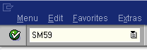A partir de cette vue, sélectionnez l’option TCP/IP connections et cliquez sur Create.
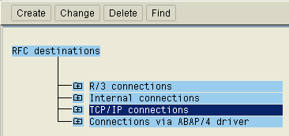La vue RFC Destination s’affiche.
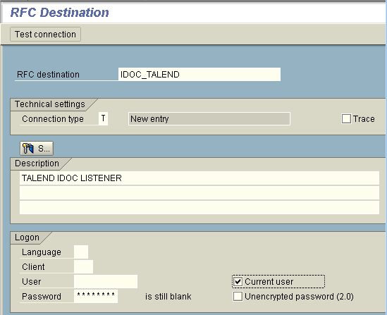Dans le champ RFC destination de cette vue, saisissez le nom de la destination RFC à utiliser. Ce champ étant sensible à la casse, il est recommandé d’utiliser des majuscules. Pour ce scénario, saisissez IDOC_TALEND.
Dans le champ Connection type, sélectionnez le type T pour lancer un programme externe via TCP/IP.
Dans le champ Description, saisissez une courte description de la destination RFC sur le point d’être créée. Pour ce scénario, saisissez simplement TALEND IDOC LISTENER.
Dans la zone Logon, cochez la case Current user puis cliquez sur le bouton Save dans la barre d’outils supérieure.
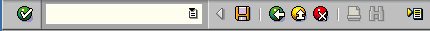La destination RFC nommée IDOC_TALEND s’ouvre.
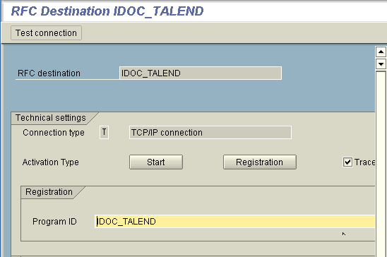A partir de cette vue, cliquez sur Registration pour afficher le champ Program ID. Dans ce champ, saisissez l’ID du programme. Cet ID doit utiliser le même nom que celui de la destination RFC créée, soit IDOC_TALEND.Cliquez de nouveau sur Save dans la barre d’outils supérieure pour valider cette configuration.
Toujours dans cette barre d’outils, cliquez sur le bouton de retour (sous forme de flèche pointant vers la gauche) pour retourner à la vue SAP Easy Access (écran principal de SAP) et exécuter la transaction SMGW afin d’ouvrir la vue Moniteur passerelle (gateway monitor).
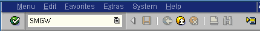A partir de la barre de menu Moniteur passerelle (gateway monitor), sélectionnez Goto > Parameters > Display. Un tableau comme celui présenté ci-dessous s’affiche. Vous pouvez y trouver le service de passerelle du système SAP R/3.
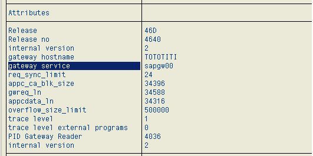
Dans cet exemple, le service de passerelle à utiliser est sapgw00.
La destination RFC requise est maintenant créée.
Depuis la perspective Data Integration de votre Studio, procédez comme suit :
A partir de la Palette,déposez le composant tSAPIDocInput dans l’espace de modélisation graphique.
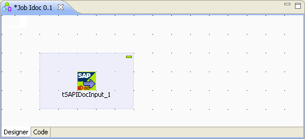Double-cliquez sur ce composant pour ouvrir l’onglet Basic settings de sa vue Component et définir ses propriétés.
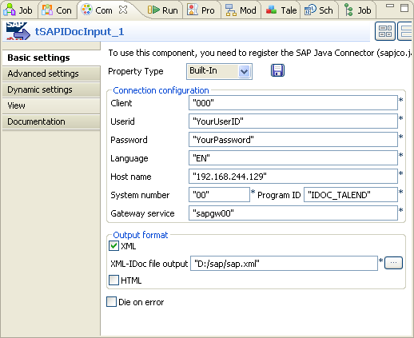Dans le champ Client, saisissez le code de connexion (client number) du système SAP R/3. Pour ce scénario, saisissez 000.
Dans les champs Userid et Password respectivement, saisissez les informations d’authentification, à savoir l’identifiant et le mot de passe.
Dans le champ Language, saisissez la langue utilisée par le système SAP R/3. Pour ce scénario, saisissez EN.
Dans le champ Host name, saisissez l’adresse IP du serveur d’hébergement du système SAP R/3 donné.
Dans le champ System number, saisissez le numéro du système du système SAP R/3.
Dans le champ Gateway service, saisissez le nom de votre service Gateway.
Dans le champ Program ID, saisissez l’ID du programme défini lors de la création de la destination RFC requise. Pour ce scénario, saisissez IDOC_TALEND.
Dans le champ XML-IDoc file output, saisissez le chemin d’accès ou parcourez votre répertoire jusqu’à l’emplacement où vous souhaitez stocker le fichier SAP IDoc récupéré.
Appuysez sur CTRL+S pour sauvegarder votre Job et appuyez sur F6 pour l’exécuter.
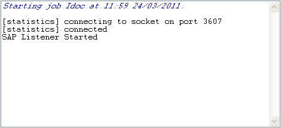A partir de cette console, vous pouvez constater que le composant tSAPIDocInput écoute le système SAP R/3 donné.
Retournez sur la destination RFC du système SAP R/3 et cliquez sur Test connection.
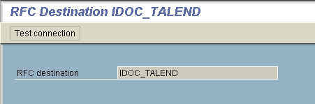
Le résultat du test indique que la connexion entre le système SAP R/3 et le composant d’écoute tSAPIDocInput est établie avec succès.
Le composant tSAPIDocInput écoute désormais le système SAP R/3 et attend l’invocation de la destination RFC précédemment définie.